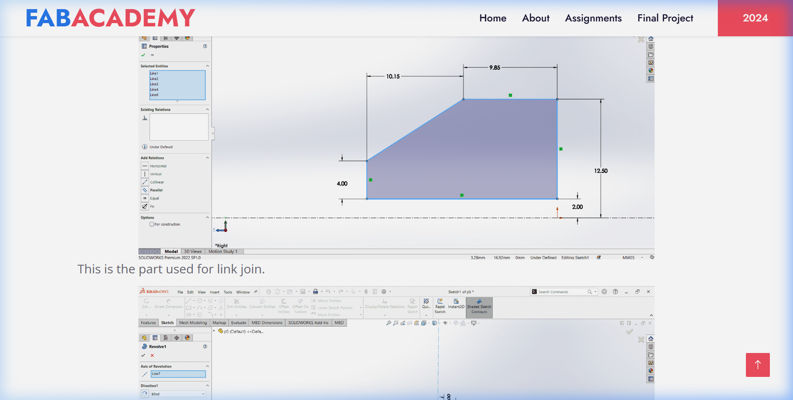
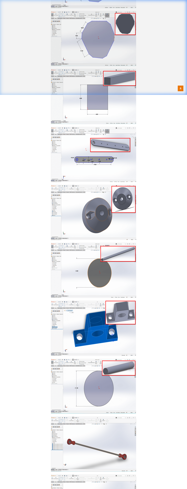
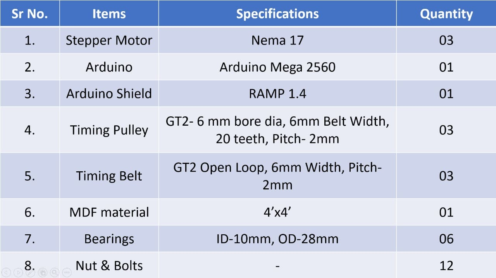
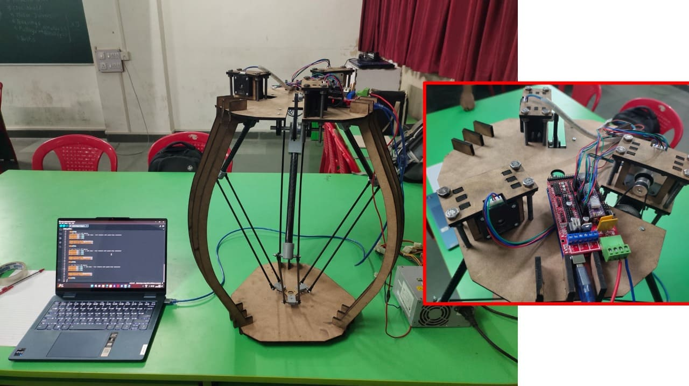

High_Speed_Delta
A parallel kinematic robot designed for high-acceleration pick-and-place tasks. Built at Fab Academy, featuring complex CAD modeling, laser-cut structural frames, and multi-axis GRBL control.
Mechanical_Specs
Quick Shortcuts
01_Mechanical_Design
The mechanical frame was designed in SolidWorks, utilizing a combination of laser-cut 6mm MDF and 3D-printed joints to achieve high structural rigidity without excessive mass.

// SolidWorks_Assembly_Logic
Full kinematic assembly showing the 3 articulated arms, the triangular end-effector plate, and the support vertical faces. Each part was optimized for additive and subtractive manufacturing.
Fabrication_Process
The structural faces were laser cut from 6mm MDF. Kerf adjustments were verified via test drills, and the 3 stepper mounts were precisely aligned to ensure zero-backlash.

Component_BOM
Technical manual capture of the Bill of Materials. Includes 3x NEMA 17 motors, A4988 drivers, and custom 3D printed parallel links for the delta mechanism.

02_Control_Architecture
The robot is powered by an Arduino UNO running the high-performance GRBL firmware, providing real-time G-Code parsing and multi-axis synchronization.

// Integrated_Control_Stack
Features a CNC Shield V3 with A4988 drivers. The 12V 5A power supply ensures consistent torque across all three quadrants of the delta workspace.
Firmware_Logic
Utilized GRBL for industrial-grade G-Code mapping. Custom AccelStepper scripts were used during the early prototyping phase to verify joint kinematics and acceleration curves.
Interfacing
Universal G-Code Sender (UGS) provides the graphical front-end for manual jogging, homing (G28), and absolute positioning (G90) cycles.
03_Kinematic_Theory
Parallel_Kinematics_Brief
Unlike serial arms (Scara/6-DOF), the Delta Robot uses **parallel kinematics**. The base-mounted actuators move the triangular platform purely through **parallelism**, restricting the end-effector to pure translation (X, Y, Z) without rotation. This design significantly reduces the moving mass, allowing for extreme accelerations required in packaging and assembly.